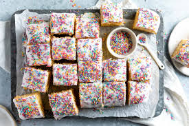

School Cake Recipe

Craving for a Halal and deeelightful dessert?😋
Well, you've come to the right place.
By fffff615┃22/2/2025
Ingredients:
For the Cake:
- 200 g Self-Raising Flour
- 200 g Butter at room temperature
- 150 g Sugar
- 3 Eggs
- 1 Tsp Baking Powder
- Pinch of Salt
- 50 ml Milk
- 1 Tbsp Vanilla Essence
For the Icing:
- 200 g Icing Sugar
- 80 g Butter
- ½ Sprinkles
- 1 Tbsp Vanilla Essence
Instructions:
- Mix together the butter and sugar, ideally using an electric whisk.
- Add the eggs one at a time, mixing well after each addition.
- Sift in the flour, baking powder, and salt. Fold in gently.
- Add the milk and vanilla essence. Mix until well combined.
- Spread the mixture evenly into a lightly greased baking tray.
- Place into oven for 25 mins at 180°C. Check with a toothpick to ensure it's fully cooked.
- Prepare the icing by mixing together all of the ingredients.
- Evenly spread the icing over the cake after it has cooled for at least 20 minutes.
- Cover in sprinkles, and enjoy!
Notes:
- Best served with custard.
- If you only have plain flour, add 2 tsp baking powder & ½ tsp salt.
- Works best with unsalted butter.
- Allow the cake to cool before adding icing.
About
This recipe is suitable
for vegetarians 🌱 and is Halal حلال depending on the ingredients
used. Not suitable for vegans 🍆.